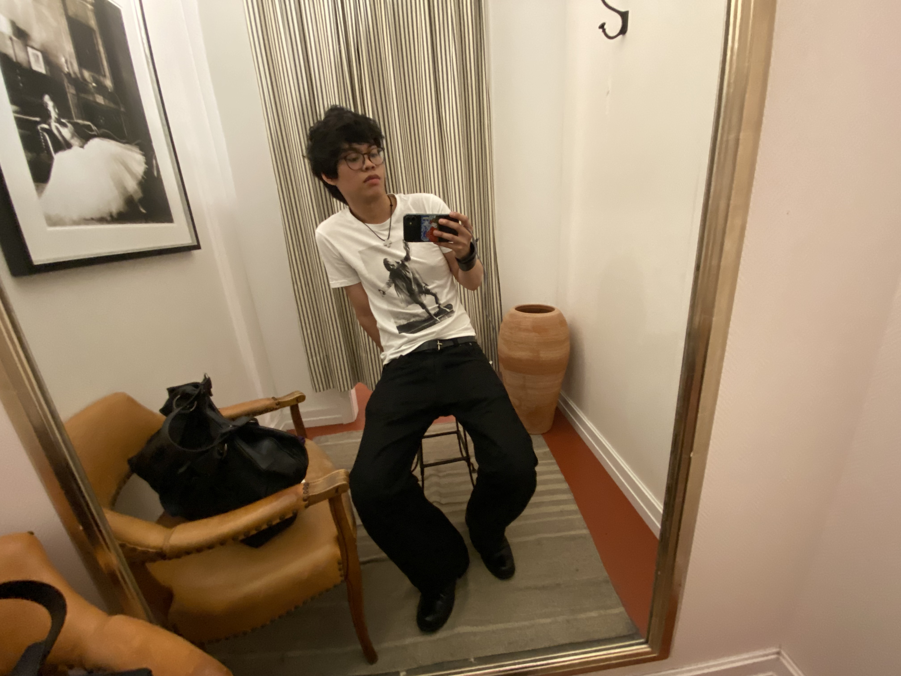
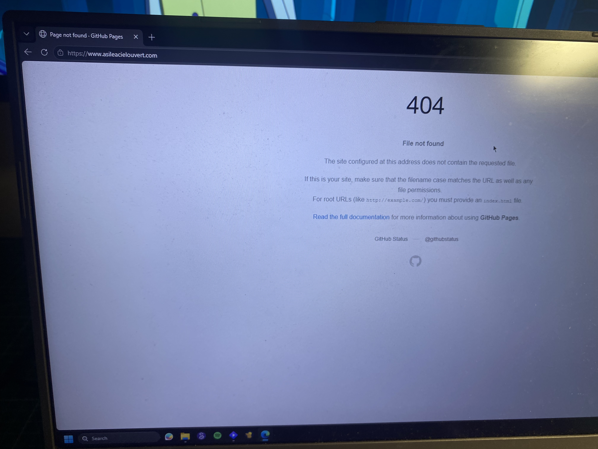

Asile à ciel ouvert.
[15/06/2026 Before Sunset]


Cigs, Wine, Vomit,
[09/06/2026 Late Night]
I'm losing a lot of weight.
It doesn't really matter now. I have other things to worry about.
I was thinking that Venice is beautiful, but it isn't my sea.
I was thinking I'd leave your eyes alone and finally look at the sky I've been neglecting for so long.
My eyes are useless now. Whatever I see is never quite what it is. My mind keeps changing meanings, forgetting what things once meant.
Tonight, I'm writing simply because I don't want to lose the habit of writing.
What else?
I'm grateful for my friends.
I'm grateful that intelligent people exist: that even when emotions and events carry the same names, they can still be understood for what they truly are.
I never knew I could love this much.
Ti ho amata davvero come non pensavo fosse possibile fare, buona vita.
Anche se in realtà non vorrei che le nostre strade si separassero così. Ma siamo due rami di alberi diversi e cresciamo fiori diversi. Forse è giusto così, me ne farò una ragione. Però ancora spero che le cose cambino. Spero di poterti vedere coperta di sole ancora una volta. Più di una. Forse per sempre.
Quel che scrivo di momentaneo diventa eterno. Quel che provo ora invece? Che destino che ci vien dato... Nulla mai è nostro tranne che la tristezza.
[03/06/2026 Late Night]
I’m losing weight.
Not too long ago I was struggling to eat in a deficit because my emotions were all over the place. Every night I’d binge because I hadn’t eaten the entire day.
Now I’m at the point where I’m not even hungry for dinner after skipping lunch.
Mostly because I’m mentally tired of living, but also because I want some of my old tops to fit loose again like they did years ago.
I think smoking helps. I’ve started smoking even when I’m back home, which I never used to do.
I also think I’ll become prettier.
[01/06/2026 Late Night]
La fine di un amore non è solo la morte del proprio Io che perde un suo sostegno fondamentale, che si trova spogliato di senso, del senso che l’amore gli assicurava, ma la morte del mondo intero, di quel mondo dei Due che quell’amore aveva fatto sorgere miracolosamente per una seconda volta. Quando finisce un amore non finisce mai, dunque, solo un amore, ma finisce anche e soprattutto il mondo che i Due hanno generato. Nella morte di un amore muore l’intero mondo dei Due, dei loro oggetti, dei loro rituali, della loro memoria, dei loro viaggi, dei loro ristoranti, dei loro libri, delle loro case, dell’unione dei loro corpi, della loro stessa vita perché l’esistenza dell’amore era ciò che dava senso a quel mondo che ora non c’è più.
[31/05/2026 Late Night]
People cling to the idea of an isolated, singular self, as if identity exists independently from history, language, class, culture, relationships, and institutions.
So many minds become rigid, familiarity confused with truth.
If your will is truly free, why do you want what you want? Why are you where you are? How much of your life is choice, and how much is conditioning, circumstance, incentives, language, or systems you never chose?
Human existence is always already situated. We are thrown into a world we didn’t choose, shaped by structures that existed before us. I don’t understand why these ideas remain so marginal in public discourse, maybe because they’re uncomfortable, maybe because they challenge the mythology of individualism more than people want to admit.
Choose to accept how absurd life is.
You’ll probably live much the same way afterward. Just with fewer illusions.
(Trying to practice writing again. I think it's time for me to read good old Dostoevskij. I wish it wasn't so stupidly hard to read him. Not because of semantics, more because every book is linked to people i used to care for who are no longer present in my life.)
(I won’t lose my flavor. I know people enjoy my flow of consciousness, nonlinear, unregulated and direct storytelling — or at least, that’s what I’ve been told)
[30/05/2026 Late Night]
I’ve been feeling suicidal again.
Not in the way I used to. I’m not longing for another life anymore. I just want distance from feeling itself. I want quiet where there is constant noise. I want numbness. I want, for a forever-moment to stop carrying the weight of existing inside my own mind.
I thought this blog would help me purge some of it out. Help me measure progress. Help me understand myself.
But I was wrong. I've been scratching open my wounds, and now I see it all. There is nothing to carry me forward.
[29/05/2026 Late Night]
Per te inizio una nuova vita, sai[25/05/2026 Late Night]
So, what do you wanna do? What's your point of view?[24/05/2026 Late Night]
I thought i had it all figured out. That if something disruptive came my way it would be crushed by my ambition and endurance.
Then all sorts of things started to disintegrate my path forward.
And because i hardly ever resolve The Past, standing on my feet would mean it would catch up to me.
So now i walk an invisible darkest road. No idea of what’s ahead. No idea of what i want there to be.
Flying debris wounds me and blood teared drops splatters on my feet like that has to mean something.
I am down, more than i want probably. But i have to keep going.
The sun won’t wait for me, and I have to reach it before agony chains me down.
I have to reach the sun. I have to reach the sun.
Its light won’t look for me. It’s light I have to grasp tightly so that even with no road and no idea of what’s coming, I will still be able to see myself.
That’s what I need.
What truly matters to me.
[21/05/2026 Late Night]
I keep playing the memory of our night at the harbour.
My eyes filled with love, a melancholic and tragic one.
The hidden moon it was.
The sweeping wind and the agitating water, but nothing louder than my heart fighting its way through my veins.
—
I always loved staring at you.
Magnetic form and captivating eyes.
A beauty only one’s memory can describe.
—
It hurts remembering.
It hurts even more when that’s just what I want to do.
But who can blame a man like me, whose life has taken on a new meaning, whose sorrow can only truly mean love.
Goodnight, again.
[17/05/2026 Late Night]
I believe the western world has embraced a paradigm now so deeply rooted in our structure that even just stopping to observe it’s nature is considered heresy.
For millenia we have kept in motion the idea that true love can only be shared by two individuals. That one is incapable of deeply caring for more than one person.
Sometimes I wonder if people realise that love, even theirs, is not fate nor destiny nor God’s plan nor a game of chance.
It actually makes me sick to my stomach when I hear couples explain their love for each other and they just paint their faces with lies and deception and I'm forced to sit there and smile at them with rage in my veins.
Love has always been a choice. You choose who you are gonna walk down a million stairs with.
It was never about them being special “right from that moment…”
How can one become special if there was no construction leading to that point.
If you think about an activity or object that was at one point or still is special to you, there is always a reason why you have given that specific thing a place in your heart, or better put, in your memory.
And i would go on and on about how love is directly linked to memory, but i dont have any scientific data to back up scientific claims. All I can do is speculate on practical and experiential factors. Theory is not my field anymore. And because I subliminally mentioned Francis Bacon and his work Novum Organum I won't go further with this claim.
At the start, I was going to ramble about how monogamy has it's roots in jealousy and possession and machismo and patriarchy, but even with these decontextualized words, you can still get a feel of the irritation i get when i hear it being forced down everyone's throat.
I'm not ready to fall asleep, but work needs me rested.Another day.
[15/05/2026 Late Night]
I don’t like those who cannot control their anger, those who don’t put in effort to change their behaviours. Anger is immediate. It doesn’t allow space for thoughtful reasoning, it pulls us away from understanding.
But I, too, get angry.
For what it’s worth, this past year I have been trying my best to stay away from negativity. I’ve always known it to be out there, ready to grab onto me, but for some reason I really don't want it to be part of my life right now. Maybe it’s because I'm starting to be really conscious about my mental health or maybe it's because I'm finally living a pretty good life and now, after years of having made peace with the idea of dying, I think I’ve realized I’m scared again.